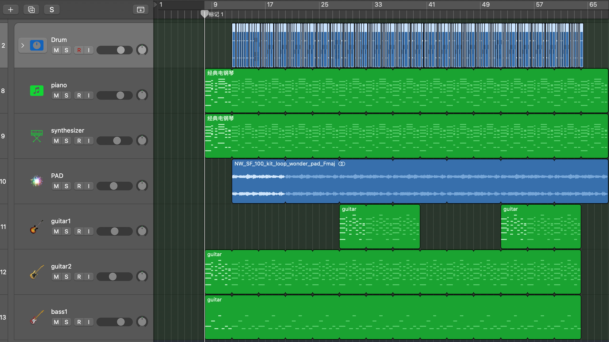
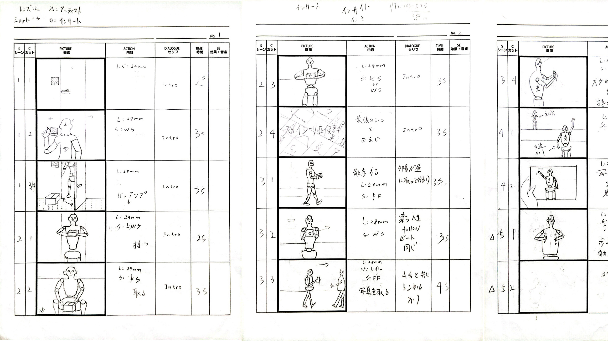
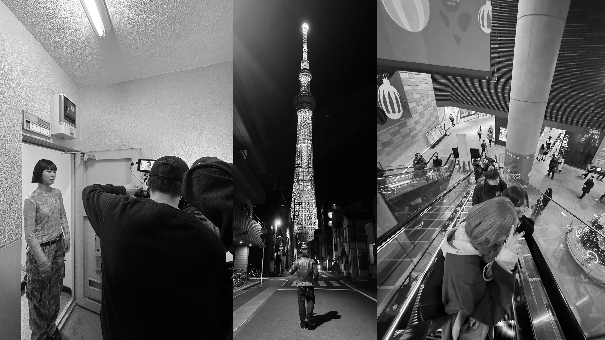
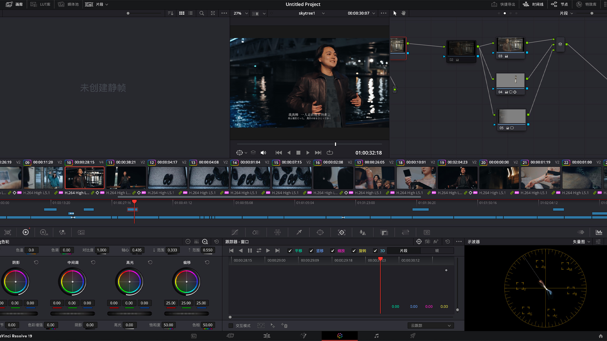

音楽を作る
How did I make the music?
ずっとシティポップの音楽が好きだったから、今回はそのスタイルの曲を作りたかった。街の賑やかさも、人混みの中の孤独感も表現できるようにしたいと思った。

絵コンテを作る
Create a storyboard.
ストーリーのあるMVだから、短い時間でどうやって話を見せるか考えて、撮影の進み方をうまく調整するようにした。今回の絵コンテ作りは、自分にとって新しい挑戦だったと思う。

撮影
Filming.
撮影は2日間に分けて行った。1日はスカイツリーの近くで、もう1日は室内で撮影した。撮影の過程はやっぱりすごく楽しかった。

編集とカラーグレーディング
Editing and color grading.
編集とカラーグレーディングもとても重要な部分だと思う。今回は主にDaVinci Resolveを使って作業した。全体的には、夜の孤独感を強調しつつ、少しレトロな雰囲気も加えたかった。
